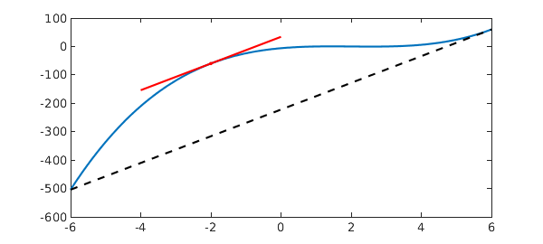

The Mean Value Theorem states that for an arc between two endpoints, there is at least one point at which the tangent to the arc is parallel to the secant through the endpoints. More specifically, if a function $f$ is continuous on the closed interval $[a, b]$ $(a < b)$ and it is differentiable on the open interval $(a, b)$, then there exists a point $c \in (a, b)$ such that
$$ f^{\prime}(c) = \frac{f(b) - f(a)}{b-a}. $$
Here is an example, where we try to locate a suitable point $c$. Let's consider $f(x) = (x-1)(x-2)(x-3)$ on the interval $[-6, 6]$.
a = -6;
b = 6;
dom = [a b];
x = chebfun('x', dom);
f = (x-1).*(x-2).*(x-3);
We calculate the slope of the secant:
sl = (f(b) - f(a))/(b - a);
We calculate the derivative of $f$:
fprime = diff(f);
Now we compute the value of $c$.
c = roots(fprime - sl)
c = -2.000000000000000 5.999999999999998
Two roots are returned. We keep the first one and ignore the other as it lies at an endpoint of the interval. The following plot visualizes this example: the tangent line at $c$ (red) is parallel to the secant (black, dashed).
LW = 'linewidth'; lw = 1.6; plot(f, LW, lw), hold on plot([a b], [f(a) f(b)], '--k', LW, lw) plot(c(1), f(c(1)),'.r', 'markersize', 20) L = 2; plot([c(1)-L c(1)+L],[f(c(1))-L*sl f(c(1))+L*sl], 'r', LW, lw)
